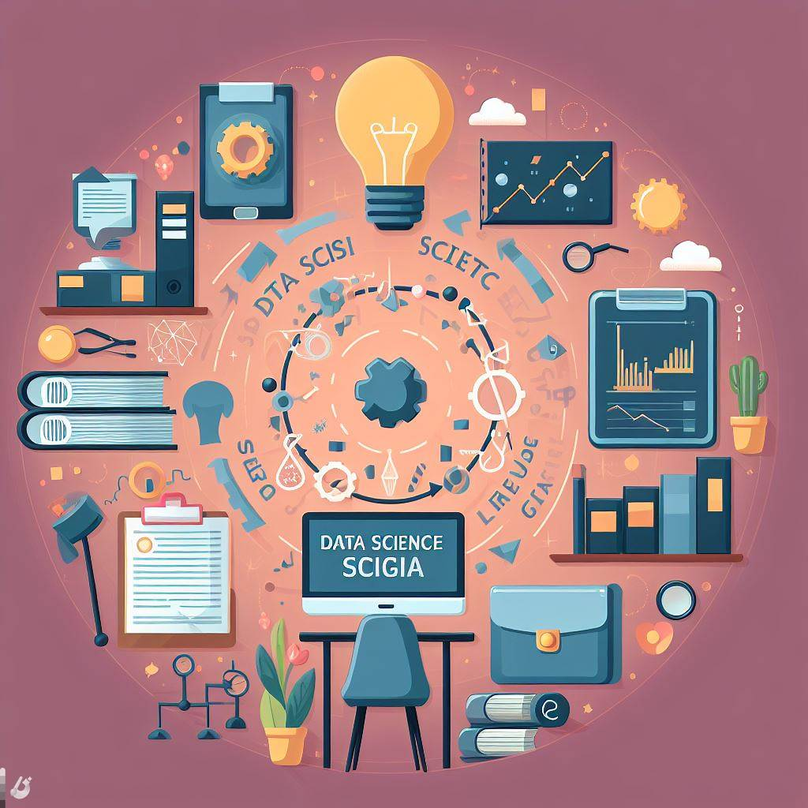

CMSC320 – Summer 2024
Introduction to Data Science
Instructor: Teaching Assistants (TAs):
Aishani Mukherjee Curie Kim Gaurav Shrivastava
Lecture Schedule: ONLINE (Combination of Synchronous and Asynchronous Sessions): 11:30 AM - 12:50 PM EDT, Tuesday to Friday.
The Zoom links for the lectures will be posted on ELMS. Class recordings for both sessions will be posted on Panopto via ELMS.
Course Overview
Data science encapsulates the interdisciplinary activities required to create data-centric products and applications that address specific scientific, socio-political, or business questions. It has drawn tremendous attention from both academia and industry and is making deep inroads in industry, government, health, and journalism.
This course focuses on (i) data management systems, (i) exploratory and statistical data analysis, (ii) data and information visualization, and (iv) the presentation and communication of analysis results. It will be centered around case studies drawing extensively from applications, and will yield a publicly-available final project or tutorial that will strengthen course participants' data science portfolios.
The course will primarily consist of sets of self-contained lectures and assignments that leverage real-world data science platforms when needed. As such, there is no assigned textbook, but there will be some recommended ones. Many lectures will come with links to required readings, which should be completed before or after the lecture (as declared), and, when appropriate, a list of links to other web resources.
Note: This course outline is tentative and subject to modification to meet the specific needs and requirements of the students and the evolving field of data science.
Prerequisites
Students enrolled in the course should be comfortable with programming (for those at UMD, having passed CMSC216 will be good enough!) and be reasonably mathematically mature. The course will heavily utilize the Python scripting language through Google Colab (or sometimes Jupyter Notebook if needed), relying on the Anaconda package manager. Primer lectures on Python for data science will be provided early on, so there's no need to worry if you haven't used Python before. Later lectures will delve into statistics and machine learning, potentially incorporating basic calculus and basic linear algebra. A light mathematical maturity, roughly at the level of a junior CS student, is preferred.
This course is aimed at junior- and senior-level Computer Science majors, but should be accessible to any student of life with some degree of mathematical and statistical maturity, reasonable experience with programming, and an interest in the topic area. If in doubt, e-mail me: fardina@umd.edu!
Tentative Topics:
Introduction to Data Science, Experiment Design, Introduction to Python, Data Types, Data collection, Git, Pandas, Database, SQL, Probability, Summary Statistics, Hypothesis Testing, Data Visualization, Data Exploration, Introduction to Machine Learning, Classifications, Decision Trees, Regression, Feature Engineering, ML Evaluation, Neural Network, Image Processing, Natural Language Processing (NLP) Introduction to Graph(s) Theory, Recommender Systems, Data Science Ethics
Learning Outcomes:
At the completion of this course, students will be able to:
- Develop a foundational understanding of data science, encompassing key concepts, methodologies, and tools.
- Proficiently use Python for data science applications, including data types, collection, and manipulation using libraries like Pandas.
- Explore machine learning concepts, including classifications, decision trees, regression, and feature engineering.
- Evaluate machine learning models using appropriate metrics, ensuring a comprehensive understanding of model performance.
- Understand advanced topics such as neural networks, image processing, natural language processing (NLP) etc.
- Understand the importance of applying ethical frameworks and guidelines to make informed decisions in real-world data scenarios.
Grading
There will be four to five assignments, one semester long final group project or tutorial, weekly online quizzes, and one final written exams (cumulative).
Final grades will be calculated as:
| Component | Percentages |
|---|---|
| Assignments/Mini Projects | 40% |
| Quizzes | 20% |
| Final Project/Tutorial | 25% |
| Final Exam | 15% |
Late Policy
Late work gets no credit.
It is recommended to submit homework and projects on time. There will be a 5% penalty for late submissions of homework and a 10% penalty for late submissions of project/tutorial checkpoints 1 and 2 within 24 hours after the deadline. After this 24-hour period, no submissions will be accepted. In ELMS/Gradescope (as instructed in the assignment or project), you can submit multiple times, and only the last submission will be graded. The penalty for late homework will be applied automatically; no request is necessary. This policy applies to both homework and projects, except for the final submission/checkpoint 3 of the final project/tutorial.
See the next section about how to contact us in special circumstances. We aim to help everyone succeed.
Communication
We are going to use a combination of online office hours and the Piazza forum (sign up here) for Q&A. This means that it's appropriate to use Piazza for asynchronous communication with the course instructors and other students, and also for short, high-bandwidth discussions that could usually take place before/after class.
Note that Piazza is not appropriate for things like asking for accommodations or other such issues/concerns. Please email:
- cmsc320gradingissues.dr.fardina@gmail.com for any grading, logistics, and extension issues
If you have a request that fits into one of these categories and you don't email the address given above, then your request may not reach the right person and may not be answered in a timely manner.
If your correspondence does not fit into either of those two categories, please email an instructor ( professor) with
[CMSC320] in the email subject line. You may also go to an instructor's office hours at the times listed below.
Please note: if you don't include [CMSC320] in your subject line when emailing instructors, your email
may not be filtered correctly.
Office Hours
* All hours are EDT
Instructor Office Hours and TA office hours details can be found on ELMS as well as on Piazza.
Do keep an eye on Piazza, though; TAs will sometimes swap hours, shift hours, host hours on Zoom, and so on! Additionally, we have at least one TA explicitly covering Piazza on each weekday; all course staff will float around Piazza in general, too!
Schedule
ALL THE LECTURE SLIDES WILL BE POSTED HERE
The schedule is subject to change as the semester progresses!
| # | Date | Topic | Sync. (S) / Async. (A) | Reading | Slides | Notes | |
|---|---|---|---|---|---|---|---|
| 1 | May 28 | Introduction to Data Science (1.1) and Data Types (1.2) | S: 1.1 A: 1.2 | Self-Study Slide: Git Additional Reading/Helpful slide: Python Demo Python | Lec1.1Intro Lec1.2DataTypes | Sign up on Piazza! HW1 Out (May 28) Final Project/Tutorial Instruction Out (May 28) | |
| 2 | May 29 | Experiment Design | S | Experimentation | |||
| 3 | May 30 | Panda, Database and SQL | A | ||||
| 4 | May 31 | Probability, Distributions, and Summary Stats | A | 6. Probability (Bayes thm,Law of tot prob) Central Limit Thm | |||
| 5 | Jun 03 | Hypothesis Testing | Hypo Testing Steps And Examples P-Value-Explaination | HW2 Out (Jun 03) | |||
| 6 | Jun 04 | Data Visualization and Data Exploration | HW1 Due (Jun 04) | ||||
| 7 | Jun 05 | Data Cleaning | |||||
| 8 | Jun 06 | Data Cleaning cont. | HandlingMissingData | Project First Checkpoint Due (Jun 06) | |||
| 9 | Jun 07 | Discussion Session by TAs | S | ||||
| 10 | Jun 10 | Introduction to ML | HW3 Out (Feb 27); | ||||
| 11 | Jun 11 | Feature Engineering and ML Evaluation |
Confusion Matrix CrossValidationVideo KFoldVideo |
||||
| 12 | Jun 12 | Feature Engineering and ML Evaluation cont. | Continued. | HW3 Out (Jun 12) | |||
| 13 | Jun 13 | Decision Trees | DecisionTree-Calculate-Entropy-InfoGain | ||||
| 14 | Jun 14 | Discussion Session by TAs | S | ||||
| 15 | Jun 17 | Classifications | Reading materials are given at end of the slide Lec16 | ||||
| 16 | Jun 18 | Regression | Simple Linear Regression | HW2 Due (Jun 18) | |||
| 17 | Jun 19 | Juneteenth Holiday | NO CLASS | ||||
| 18 | Jun 20 | Unsupervised Learning & Dimensionality Reduction | HW 4 Out (Jun 20) | ||||
| 19 | Jun 21 | Discussion Session by TAs | S | ||||
| 20 | Jun 24 | Introduction to Neural Network | HW3 Due (Jun 24) | ||||
| 21 | Jun 25 | Image Processing | Project Second Checkpoint Due (Jun 25) | ||||
| 22 | Jun 26 | Intro to Natural Language Processing (NLP) | |||||
| 23 | Jun 27 | Intro to Graph Theory |
NetworkX Intro to GraphQL These two materials are given for self-exploration if someone is interested. ClassNote_Girvan-NewmanAlgorithm Girvan & Newman. "Community structure in social and biological networks," PNAS-02. |
||||
| 24 | Jun 28 | Discussion Session by TAs | S | Cont. | |||
| 25 | July 01 | Recommender System | |||||
| 26 | July 02 | Recommender System cont. | |||||
| 27 | July 03 | Ethics and Wrap-Up Review | HW 4 Due (July 03) | ||||
| 28 | July 04 | Independence Day Holiday | NO CLASS | ||||
| July 05, 11:30 am to 1:30 PM | In-Person Final Exam (Details will be provided later) | Project Final Checkpoint Due (July 08 (noon)) |
Deliverables
Assignments
All the Assignments will be posted on Piazza/ ELMS. Instructions will appear over the course of the semester. Most assignments get released on one or two days before the lecture material gets presented and are due one or two weeks after that.
| # | Description | Date Released | Date Due |
|---|---|---|---|
| Homework 1 | Git, Pandas, and SQL | May 28 | Jun 04 |
| Homework 2 | Data Exploration and Hypothesis Testing | Jun 03 | Jun 18 |
| Homework 3 | Classification | Jun 12 | Jun 24 |
| Homework 4 | Regression, Gradient Descent and Neural Network | Jun 20 | July 03 |
Final Project/Tutorial
There will be a group final project/tutorial with a maximum of three/four persons in each group. Keep in mind that this is a semester-long project/tutorial for this course, and you should strive to make it your best work possible. It will be graded to a higher standard than the rest of the homework, considering that you have had the chance to practice these skills beforehand. Project details will be posted on Piazza/ELMS. It will be your responsibility to decide project topic as well as project partners.
| # | Description | Date Released | Date Due |
|---|---|---|---|
| Checkpoint 1 | Group Formation and Choosing Dataset | May 28 | Jun 06 |
| Checkpoint 2 | Data preprocessing and Exploration | May 28 | Jun 25 |
| Checkpoint 3 | Final deliverable of DS Project | May 28 | July 08 (noon) |
Academic Integrity
Note that academic dishonesty includes not only cheating, fabrication, and plagiarism but also includes helping other students commit acts of academic dishonesty by allowing them to obtain copies of your work. You are allowed to use the Web for reference purposes, but you may not copy code from any website or any other source. In short, all submitted work must be your own. Cases of academic dishonesty will be pursued to the fullest extent possible as stipulated by the Office of Student Conduct. Without exception, every case of suspected academic dishonesty will be referred to the Office. If the student is found to be responsible for academic dishonesty, the typical sanction results in a special grade “XF", indicating that the course was failed due to academic dishonesty. More serious instances can result in expulsion from the university. If you have any doubt as to whether an act of yours might constitute academic dishonesty, please contact your TA or the course coordinator. The University of Maryland, College Park has a nationally recognized Code of Academic Integrity, administered by the Student Honor Council.B This code sets standards for academic integrity at Maryland for all undergraduate and graduate students. As a student, you are responsible for upholding these standards for this course. It is very important for you to be aware of the consequences of cheating, fabrication, facilitation, and plagiarism. For more information on the Code of Academic Integrity or the Student Honor Council, please visit http://www.shc.umd.edu.
Examples of Academic Integrity Violations:
The following are examples of academic integrity violations:
- Hardcoding of results in a project assignment. Hardcoding refers to attempting to make a program appear as if it works correctly (e.g., printing expected results for a test).
- Using any code available on the internet/web or any other source.
- Hiring any online service to complete an assignment for you.
- You may not post the implementation of your assignments, materials related to the class (e.g., project description), or any other material associated with this online course except the final project. Even if the class is over and you have graduated, you may NOT post any material other than what is allowed.
- Sharing your homework solutions or your “test code" with any student.
- Looking at or debugging another student’s code.
- Using online forums to ask for help regarding our assignments.
AI tool disclosure: If a student chooses to use an AI tool to assist in any course work (e.g. assignments, programs, projects, reports, etc), they must disclose this information to the instructor. This disclosure should include the name of the AI tool and explain how it was used.
Consequences for non-compliance: Failure to adhere to this policy may result in a zero on the particular course work where the AI tool is used. In addition, the university honor code is applicable here: violation of the honor code and appropriate action will be enforced.
Class Announcements
You are responsible for reading the class announcements that are posted on both the course webpage and ELMS. Please check them often (at least once a day). Important information about the course (e.g., deadlines, assignment updates, etc.) will be posted on the course webpage.
Additional Administrative Information
University Policies and Resources
Policies relevant to Undergraduate Courses are found here: http://ugst.umd.edu/courserelatedpolicies.html. Topics that are addressed in these various policies include academic integrity, student and instructor conduct, accessibility and accommodations, attendance and excused absences, grades and appeals, copyright and intellectual property.
Projects/Labs: On any graded project or lab, you are NOT allowed to exchange code. We compare each student's code with every other student's code to check for similarities. Every semester, we catch an embarrassingly high number of students that engage in cheating and we have to take them to the Honor Council.
GroupMe/Other Group Chats: We encourage students to talk about course material and help each other out in group chats. However, this does NOT include graded assignments. There have been a couple instances in the past where students have posted pictures/source files of their code, or earlier sections have given away exam questions to later sections. Not only did this lower the curve for the earlier section because the later one will do better, the WHOLE group chat had to pay a visit to the Honor Council. It was an extremely ugly business. Remember that in a group of 200+, someone or the other will blow the whistle. If you happen to be an innocent person in an innocent groupchat and someone starts cheating out of the blue, leave it immediately (and better yet, say you are leaving and say you will report it).
Github: You may post your project code to private Github (or similar service) repos only. As a student, you can make a private repo for free. Just remember that your free premium subscription has an expiration date, and your code becomes public once it expires. The Honor Council can retroactively give an XF (even to students who have already graduated) if your code is then used by another student to cheat. So just be careful. Posting graded code to a public repo will give you a free ticket to the Honor Council(Unless the instructor has given you permission with some strict conditions).
Excused Absences
Missing an exam for reasons such as illness, religious observance, participation in required university activities, or family or personal emergency (such as a serious automobile accident or close relative’s funeral) will be excused so long as the absence is requested in writing at least 2 days in advance and the student includes documentation that shows the absence qualifies as excused; a self-signed note is not sufficient as exams are Major Scheduled Grading Events. For this class, such events are the final project assessment and midterms, which will be due on the dates listed in the schedule above. The final exam is scheduled according to the University Registrar.
For medical absences, you must furnish documentation from the health care professional who treated you. This documentation must verify dates of treatment and indicate the timeframe that the student was unable to meet academic responsibilities. In addition, it must contain the name and phone number of the medical service provider to be used if verification is needed. No diagnostic information will ever be requested. Note that simply being seen by a health care professional does not constitute an excused absence; it must be clear that you were unable to perform your academic duties.
It is the University's policy to provide accommodations for students with religious observances conflicting with exams, but it is the your responsibility to inform the instructor in advance of intended religious observances. If you have a conflict with a planned exam, you must inform the instructor prior to the end of the first two weeks of the class.
The policies for excused absences do not apply to project assignments. Projects will be assigned with sufficient time to be completed by students who have a reasonable understanding of the necessary material and begin promptly. In cases of extremely serious documented illness of lengthy duration or other protracted, severe emergency situations, the instructor may consider extensions on project assignments, depending upon the specific circumstances.
Besides the policies in this syllabus, the University's policies apply during the semester. Various policies that may be relevant appear in the Undergraduate Catalog.
If you experience difficulty during the semester keeping up with the academic demands of your courses, you may consider contacting the Learning Assistance Service in 2201 Shoemaker Building at (301) 314-7693. Their educational counselors can help with time management issues, reading, note-taking, and exam preparation skills.
Right to Change Information
Although every effort has been made to be complete and accurate, unforeseen circumstances arising during the semester could require the adjustment of any material given here. Consequently, given due notice to students, the instructors reserve the right to change any information on this syllabus or in other course materials. Such changes will be announced and prominently displayed.
Course Evaluations
Course evaluations are important and the department and faculty take student feedback seriously. Near the end of the semester, students can go to http://www.courseevalum.umd.edu to complete their evaluations.
Miscellaneous Resources
As we go through the course sometimes I will mention additional resources or next steps. None of this is required for the course, but students have asked for me to keep a record of which texts/websites I mention.
- Python for Data Analysis covers some of the same topics that we cover in this class, but in textbook form.
- Data Science From Scratch this book is meant to give you a grounding in how some of the statistics and math could be implemented. Mostly, data scientists use off-the-shelf libraries for their mathematical routines/functionality, this books works through how you would implement some of those libraries. The idea is that this might give you a deeper understanding of what is going on. The implementations in this book are not meant to be high-performance, or industrial strength, but illustrative.
- Web Scraping 101 is a good overview to how web scraping works.